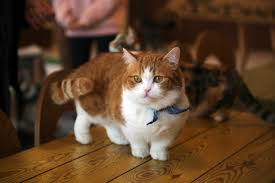

The Munchkin cat comes as both a shorthair and a longhair, both having very defining short legs. These cats are very curious and are sometimes even compared to ferrets because of how they run and play. They are very friendly and playful, sometimes even described as "dog-like".
